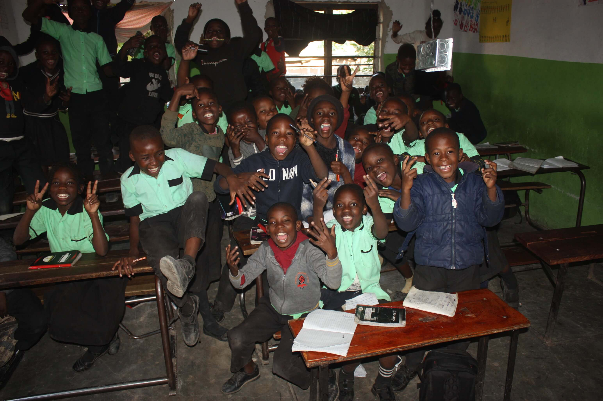

Our story
From one living room in Maramba to a school serving hundreds of children.
Determined Primary School did not begin as a school at all. It began as one woman, Loveness, teaching children in the living room of her own home.

A living room, and a few children
Loveness started teaching children from her own living room — no classroom, no formal building, just a willingness to give children in Maramba a place to learn. It was small, and it was personal.
Word spreads, families arrive
More families in the community began seeking quality education for their children, and what had started as a small initiative began to grow steadily around that need.
Family and community step in
With support from family members and the surrounding community, the initiative expanded beyond what one living room could hold. In its earlier years, the school ran with just four classrooms, with multiple grades often learning together in the same room.
An established school
Today, Determined Primary School serves more than 350 learners between about three and sixteen years old, with around ten teachers working across pre-primary and primary levels. The growth reflects years of quiet commitment — not a single turning point, but a steady one.
Community initiatives and fundraising efforts describe the school much the way its own history reads: a place that has grown through local effort, volunteer involvement, and people committed to expanding what education can look like in Livingstone. That spirit is still how the school moves forward.
Be part of the next chapter
The same community spirit that built this school keeps it running today.
Support the school